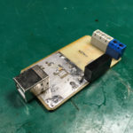

This is a second version of the USB to RS485 adapter. Please read this article about the first version.
The new device is built with ISO3082 and requires fewer components. Also, this device can provide more reliability in some situations.
This adapter’s USB side is pretty equal to the old one except for the USB protection circuit. You can see additional IC STF202 between the USB socket and FT232.
STF202 is a USB Filter with ESD Protection. Bi-directional EMI Filtering Prevents Noise from Entering/Leaving the System.
Here is the internal circuit of the device TSOP−6 package.
{kind=link}
This device can work in USB low-speed and full-speed modes. Please refer to the datasheet to get more information about STF202.
RS485 part with galvanic isolation is built with a single ISO3082 from TI. This is a very reliable industrial-grade high-speed transceiver.
ISO3082 still requires an isolated power supply. This circuit is based on the well-known TMA0505 DC converter.
Here is a full schematic of the new adapter:

And the drawing of the board.
{kind=link}
Resistors R1 and R2 provide additional protection and match with long lines. R3 is using to connect isolated signal ground to the actual ground (earth). This is very important for line protection.
RS485 line is required only two twisted wires to transmit data, but it is’ a very good idea to connect all isolated signal grounds of all devices on the line. This may help to reduce any voltage bias between distant devices.
Typical two-wires RS485 network.
{kind=link}
Don’t forget to terminate both sides of the line with 120-ohm resistors!
The current USB to RS485 adapter is already equipped with such resistor (R8 on the schematic).
Completed board
{kind=link}
{kind=link}
3 thoughts on “Isolated USB to RS485 adapter version 2”